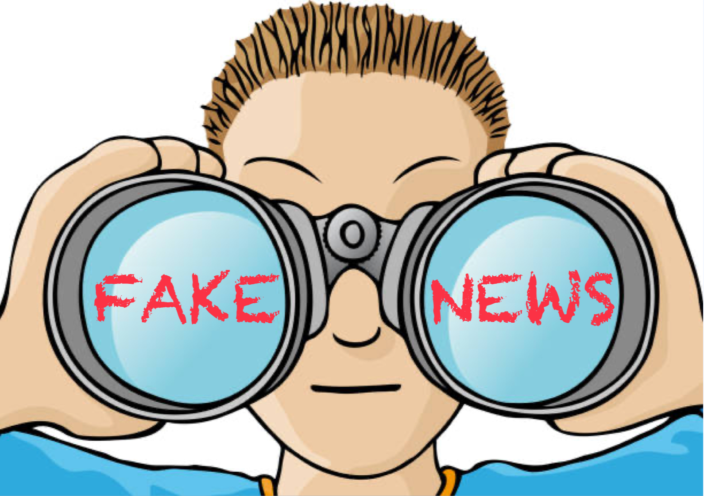

When scrolling on social media and the internet, it is easy to believe everything in front of your eyes. But we now know it is easy to fabricate information, or to emphasise certain stories without explaining the whole context. As shown on this website, it can even lead to global panic, such as believing that 5G caused the spread of Covid 19, or that climate change is a hoax.
Let's talk a bit about how you can spot these misconceptions so you don't fall victim to one of these beliefs
Check the Sources
Bias
Check the Writing
ALWAYS BE SKEPTICAL!